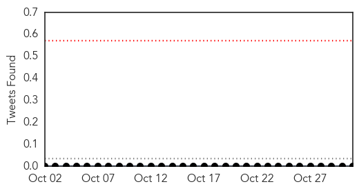

Hepatitis
30-Day Web Trend
4 alerts, 6 warnings

30-Day Twitter Trend
0 alerts, 0 warnings

Article Locations

Article Confidences

Top Articles:
- 0.989
- What is hepatitis C? Everything you need to know
- 0.927
- Why doctors say all baby boomers should be tested
- 0.907
- Health care workers at heightened risk of hepatitis C, Others news, Health News, AsiaOne YourHealth
- 0.841
- Hospital acting cautiously, hoping for no more hepatitis C cases
- 0.826
- Up to 4,800 McKay-Dee Hospital patients may have been exposed to hepatitis C
- 0.778
- Former McKay-Dee Hospital nurse believed to be connected to Hepatitis C exposure
- 0.688
- 4,800 McKay-Dee patients could have been exposed to hepatitis C
Top Tweets:
-
No tweets found for Oct 31, 2015
Ebola
30-Day Web Trend
3 alerts, 0 warnings

30-Day Twitter Trend
19 alerts, 0 warnings

Article Locations
Article Confidences

Top Articles:
- 0.970
- Untitled Article
- 0.964
- Dozens of Sierra Leonean Medical Experts trained on Disease Control and Prevention in China
- 0.809
- UN reaffirms commitment to work closely with the people and the Government of Sierra Leone for realization of SDGs.
- 0.769
- EBOLA and the PLAGUE sprayed on spider webs by UK MoD
- 0.628
- Yeovilton sailors honoured for efforts in Ebola fight
- 0.549
- Sierra Leone and India to increase bilateral cooperation
Top Tweets:
- 0.998
- Former Richland Woman Recounts Tracking the Ebola Virus in Sierra Leone - https://t.co/Hi9Gsr7BOb ebola
- 0.995
- ebola hahaha!! - https://t.co/fjt9AgYqyv ebola
- 0.995
- Xpert Ebola - https://t.co/n0DBzaCiX2 ebola
- 0.995
- Is Ebola a Virus or Bacteria? - https://t.co/85GdTjTSYH ebola
- 0.995
- Former Richland Woman Recounts Tracking the Ebola Virus in Sierra Leone - NBC Right Now https://t.co/3HWrtv4A5i ebola EVD
- 0.993
- Deforestation 'may have started west Africa's Ebola outbreak' - https://t.co/80eVyoI1sL ebola
- 0.990
- Penn Study Blocks Ebola Virus Budding by Regulating Calcium Signaling - https://t.co/RNMEZaJN6D ebola
- 0.987
- Emory Ebola - https://t.co/Abtwy4wW6x ebola
- 0.981
- ebola crisis - https://t.co/JodKe5Xk2p ebola
- 0.981
- Veigar is some ebola for champ select - https://t.co/w7Rw35yenZ ebola
- 0.976
- Ebola w/ uncle dubsmash Annoyu drunk - https://t.co/PSX0qhvODV ebola
- 0.971
- Blocking calcium-signaling pathway could inhibit Ebola virus and other sources ... - News-Medica https://t.co/HTdjxfTGy2 ebola EVD
- 0.967
- Religion and Ebola: Learning from experience - https://t.co/cch7vSozrm ebola
- 0.962
- Making Sense of the Outbreak: Henry 'Amaze' Toe's Back-Kick to Ebola - https://t.co/Etn7nYmkGd ebola
- 0.961
- Former Richland Woman Recounts Tracking the Ebola Virus in Sierra Leone - NBC Right Now https://t.co/q0eL92IiAk
- 0.960
- BREAKING EBOLA HERE! WEST AFRICAN REFUGEE ARRIVES WITH EBOLA https://t.co/d8pg9qn1GH …
- 0.960
- BREAKING EBOLA HERE! WEST AFRICAN REFUGEE ARRIVES WITH EBOLA https://t.co/d8pg9qn1GH …
- 0.960
- BREAKING EBOLA HERE! WEST AFRICAN REFUGEE ARRIVES WITH EBOLA https://t.co/d8pg9qn1GH …
- 0.960
- BREAKING EBOLA HERE! WEST AFRICAN REFUGEE ARRIVES WITH EBOLA https://t.co/d8pg9qn1GH …
- 0.960
- BREAKING EBOLA HERE! WEST AFRICAN REFUGEE ARRIVES WITH EBOLA https://t.co/d8pg9qn1GH …
- 0.960
- BREAKING EBOLA HERE! WEST AFRICAN REFUGEE ARRIVES WITH EBOLA https://t.co/d8pg9qn1GH …
- 0.960
- BREAKING EBOLA HERE! WEST AFRICAN REFUGEE ARRIVES WITH EBOLA https://t.co/d8pg9qn1GH …
- 0.960
- BREAKING EBOLA HERE! WEST AFRICAN REFUGEE ARRIVES WITH EBOLA https://t.co/d8pg9qn1GH …
- 0.960
- BREAKING EBOLA HERE! WEST AFRICAN REFUGEE ARRIVES WITH EBOLA https://t.co/d8pg9qn1GH …
- 0.960
- BREAKING EBOLA HERE! WEST AFRICAN REFUGEE ARRIVES WITH EBOLA https://t.co/d8pg9qn1GH …
- 0.959
- Three new cases of Ebola recorded in Guinea - https://t.co/pFhSjExHki ebola
- 0.947
- Ebola case confirmed in Nashville, TN - https://t.co/BVyA1uRziT ebola
- 0.939
- Christie and Ebola nurse face hurdles in quarantine lawsuit - https://t.co/KU5UvjAh6Z ebola
- 0.933
- MoD to use spiders to test lifespan of weaponised Ebola and Black Death - https://t.co/K2AFP5jWg4 ebola
- 0.932
- Spider webs with Ebola and the Plague - https://t.co/OZysTSdWG1 ebola
- 0.929
- [Editorial] Ebola: forgotten but not gone? - https://t.co/nhm6hNFwPn ebola
- 0.926
- The Politics Behind the Ebola Crisis - Newsweek https://t.co/pbUsdZ6le0 ebola EVD
- 0.926
- MoD test lifespan of deadly diseases ebola and the black death using spiders - https://t.co/VfxJh35qqP ebola
- 0.925
- Ministry of Defence use spiders to test the lifespan of ebola - https://t.co/gyOGDYbIEx ebola
- 0.912
- Yeovilton sailors honoured for efforts in Ebola fight - https://t.co/iToMbLRz4x ebola
- 0.906
- Nat Geo's 'Breakthrough' kicks off with look at ebola, USAMRID and pandemic risks - https://t.co/kAhGqOVKLU ebola
- 0.905
- MoD to use spiders to test lifespan of weaponised Ebola and Black Death - Western Morning News https://t.co/8fC9BuvlF5 ebola EVD
- 0.902
- Quarantined nurse slams state Ebola policy - https://t.co/uKEXAqGtHk - https://t.co/mZub9ArbpK ebola
- 0.899
- This is Not a Drill – Biocontainment and Ebola - https://t.co/HP5bMti1yN ebola
- 0.897
- October 30th 2015 UWI Ebola Lecture - https://t.co/As9NyImN9q ebola
- 0.891
- Ebola 'Team B' model could serve more broadly, its members say - https://t.co/D6wPELlngF ebola
- 0.891
- Ebola 'Team B' model could serve more broadly, its members say - https://t.co/0v8NjMYKQ2 ebola
- 0.869
- IOM launches second phase of Ebola Free Ghana - GhanaWeb https://t.co/nfdaoVGr8J ebola EVD
- 0.869
- Combating Ebola: Cameroon listed for clinical trials - https://t.co/npBa1qr20I ebola
- 0.868
- Rencontrer nos partenaires Ebola https://t.co/VZ7yHkNdlx Africaagainstebola @airtelrw
- 0.868
- 0 - https://t.co/CTCyzYoRrp ebola
- 0.861
- Impact of bed capacity on spatiotemporal shifts in Ebola transmission - https://t.co/Wx9W7Tc2U3 ebola
- 0.846
- Christie and Ebola nurse face hurdles in quarantine lawsuit - https://t.co/L5uV0BFMYr https://t.co/uQVe1MZSkG ebola EVD
- 0.843
- Christie and nurse who was quarantined over Ebola fears face hurdles in ... - https://t.co/L5uV0BFMYr https://t.co/FP8ILZrTX8 ebola EVD
- 0.808
- Global nurse to share experiences from Sudan, Sierra Leone, Afghanistan - https://t.co/9RXVljfyRP ebola
Showing top 50 tweets...